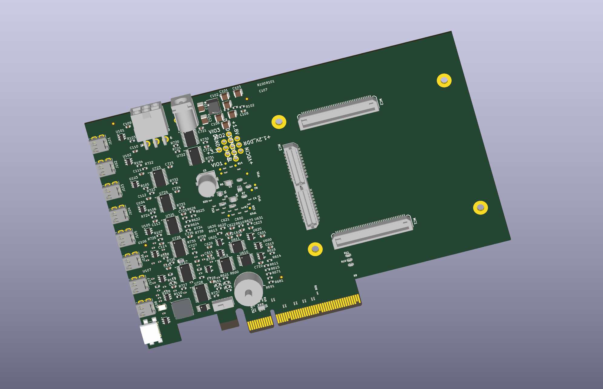
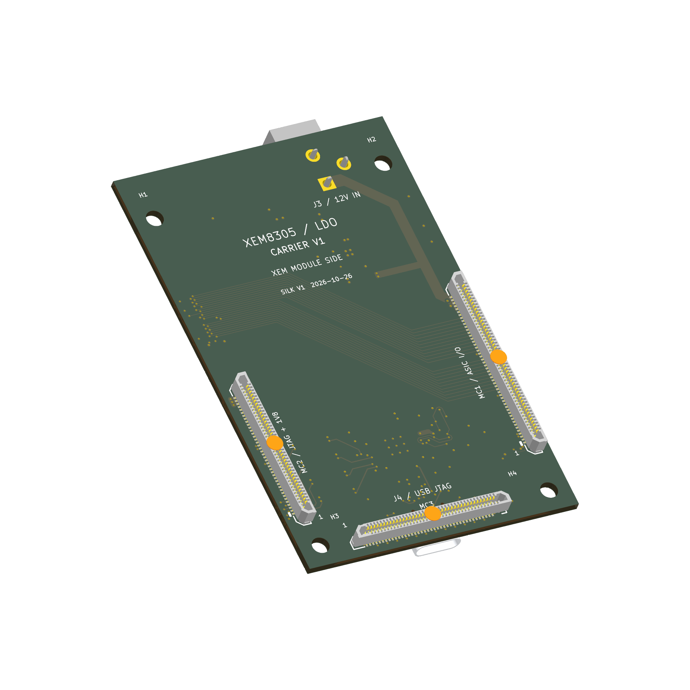

Breakout schematic and layout
BRK8310-derived XEM8310 design · 27 October working snapshot

Layers, planes, parts and netsOpen full view ↗

Work in progress: initial placement, unrouted. Connector fit and electrical checks remain open.
XEM8305 carrier for the LDO board
Latest schematic, routed board and 3D views

Layers, planes, parts and netsOpen full view ↗

Interactive assembly uses the 26 October model, before later copper edits.
Routing and native connectivity checks complete. Fabrication and powered testing remain open.